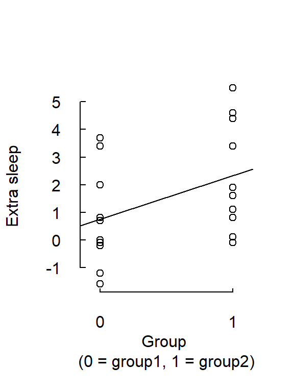

Today some tips on how extract and repackage results from analysis stored as R objects. User-made functions can be helpful for customize outputs from standard analysis (like the t-test or linear regression). Then we will continue our work with analyzing data from the psychoacoustic experiment (Script 2).
Everything in R is an object. This is true also for outputs of statistical tests. Here is a t-test of the difference in mean sleep improvement between two groups taking two different sleeping pills (1 and 2).
# Data from R's set of preloaded data
d <- sleep
# Just recoding, so group variabel is dummy coded: group 1 = 0, group2 = 1
d$group <- as.integer(d$group) - 1
# t-test, I prefer the Welch test (var.equal = FALSE), but here I use the standard
# t-test (var.equal = FALSE), to compare with the output of the dummy variable
# regression below
t_out <- t.test(d$extra[d$group == 1], d$extra[d$group == 0], var.equal = TRUE)
t_out##
## Two Sample t-test
##
## data: d$extra[d$group == 1] and d$extra[d$group == 0]
## t = 1.8608, df = 18, p-value = 0.07919
## alternative hypothesis: true difference in means is not equal to 0
## 95 percent confidence interval:
## -0.203874 3.363874
## sample estimates:
## mean of x mean of y
## 2.33 0.75I stored the output in t_out. Use attributes() to see the names of the various data structures stored in t_out; use $ to extract selected output.
attributes(t_out)## $names
## [1] "statistic" "parameter" "p.value" "conf.int" "estimate"
## [6] "null.value" "alternative" "method" "data.name"
##
## $class
## [1] "htest"t_out$conf.int## [1] -0.203874 3.363874
## attr(,"conf.level")
## [1] 0.95This code combines selected output in a vector called my_result. Use names() to remember what each element represents.
# Difference between group means is not stored in t_out, so calculate below
mean_diff <- mean(d$extra[d$group == 1]) - mean(d$extra[d$group == 0])
t_result <- c(mean_diff, t_out$conf.int, t_out$p.value)
names(t_result) <- c('mean-diff', 'ci95%lo', 'ci95%hi', 'p-value')
round(t_result, 3) # Print to screen with three decimals## mean-diff ci95%lo ci95%hi p-value
## 1.580 -0.204 3.364 0.079
Here is a regression analysis using the same data. The fitted model is \(\hat{y} = b_0 + b_1D\),
where \(D\) is a dummy coded variable of group: group1 = 1, group2 = 0.
# Just to recode to Group1 = 1, Group2 = 0, before the regression analysis, lm()
lm_out <- lm(d$extra ~ d$group)
lm_out##
## Call:
## lm(formula = d$extra ~ d$group)
##
## Coefficients:
## (Intercept) d$group
## 0.75 1.58attributes(lm_out)## $names
## [1] "coefficients" "residuals" "effects" "rank"
## [5] "fitted.values" "assign" "qr" "df.residual"
## [9] "xlevels" "call" "terms" "model"
##
## $class
## [1] "lm"# Confidence intervals are not in lm_out, calculated below
b_ci <- confint(lm_out)[2, ] # Confidence interval about coefficient for group-dummy
# A bit hard to find teh p-value for the coefficinet, but here it is:
pvalue <- summary(lm_out)$coefficients[2, 4]
lm_result <- c(lm_out$coefficients[2], b_ci, pvalue)
names(lm_result) <- c('regr.coeff', 'ci95%lo', 'ci95%hi', 'p-value')
round(lm_result, 3) # Print to screen with three decimals## regr.coeff ci95%lo ci95%hi p-value
## 1.580 -0.204 3.364 0.079round(t_result, 3) # ... and t-test results again for comparison## mean-diff ci95%lo ci95%hi p-value
## 1.580 -0.204 3.364 0.079
Output stored as object may be used as input to other functions. Here is a plot of the relationship between extra sleep and the dummy coded group variable. lm_result was used as input to the function abline() to draw the regression line.
plot(d$group, d$extra, xlab = 'Group \n(0 = group1, 1 = group2)',
ylab = 'Extra sleep', xlim = c(-0.5, 1.5), xaxt='n')
abline(lm_out)
Click here for the script file (Script2) as we left after last time.
(Data sets: threshold data, and background data. See codebooks.txt for details on the variables).
Today we’ll sum up our group comparisons based on arithmetic means, and then do similar analysis of differences between group medians (robust to influences from the outliers in the data). Finally, we will then do test the relationships between auditory abilities and age using regression techniques.
How would you evaluate the observed differences in group medians of thresholds between the listener groups?
© Mats E. Nilsson
Gösta Ekman Laboratory,
Department of Psychology, Stockholm University